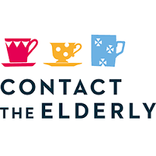

Independent Age are a charity committed to letting older people live independently for as long as possible. Their services include offering friendly contact for elderly residents in the local area, providing a strong campaigning voice for elderly people's rights, and even offering legal advice. They are always on the look out for volunteer visitors, who provide companionship for older people, and also local ambassadors, who help raise awareness of the need to support older people in the community.
W: https://www.independentage.org/get-involved/how-can-i-volunteer
T: 020 7605 4200
E: charity@independentage.org
Contact the Elderly is a national charity dedicated to tackling loneliness and social isolation amongst older people living in the UK. Their main activity is organising free monthly social events for small groups of isolated older people, the most common of which are tea parties! Volunteering here could involve hosting your own tea party or even just being a guest at one.
W: https://www.contact-the-elderly.org.uk/become-a-volunteer
T: 0800 716543
E: tabitha.howes@contact-the-elderly.org.uk
Age UK are a nationwide organisation offering a huge variety of support to older people, including providing information and advice on their rights and options, health and care services, befriending volunteers who tackle loneliness and isolation, and campaigning and research to ensure their lives are the best they can be. Volunteering activities here can be direct interactions, such as befriending, or fundraising and campaigning pursuits.
W: https://www.ageuk.org.uk/get-involved/volunteer/
T: 0800 678 1602
E: info@ageukbirmingham.org.uk